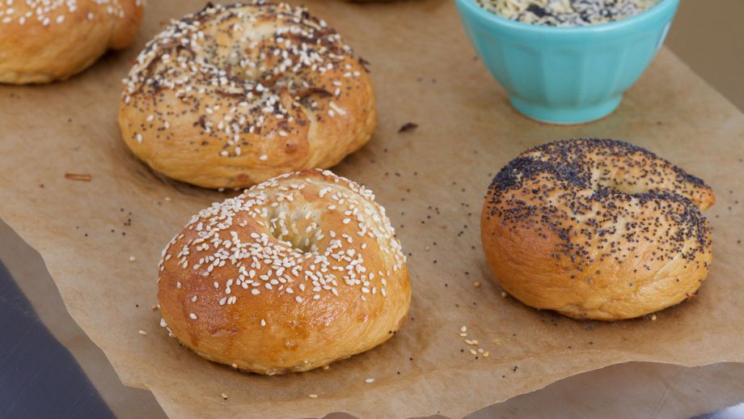

<!DOCTYPE html>
<html>
<head lang="en">
<meta name="viewport" content="width=device-width, user-scalable=no"/>
    <title>Pan</title>
<link rel="stylesheet" type="text/css" href="Estilos.CSS">
    
    <body>
    <div class="cabecera">
        <center></center>
    </div>
    </body>
    
<meta name="viewport" content="width=device-width"/>
<meta name="viewport" content="width=320"/>
    
    <body background="25120819-cerrar-un-fondo-de-coloridos-dulces-de-caramelos-de-azucar.jpg"> 
     </body>
    <body><a href="espanol.html"></a></body>
    <form>
    <div class="contenido">
         <center><h1><font face="Comic Sans MS,arial,verdana"size=5>Bagels clásicos</font></h1></center>
          <center><a href="/"></a></center>
        <center><h1><font face="Comic Sans MS,arial,verdana"size=5>Ingredientes</font></h1></center>
        <center><h1><font face="Comic Sans MS,arial,verdana"size=4>Para la primera masa:</font></h1></center>
        <center><h1><font face="Comic Sans MS,arial,verdana"size=4>550 ml de agua caliente, 1 cucharadita de levadura seca instantánea, 450 g de harina panificable.</font></h1></center>
        <center><h1><font face="Comic Sans MS,arial,verdana"size=4>Para la segunda masa:</font></h1></center>
        <center><h1><font face="Comic Sans MS,arial,verdana"size=4>¾ cucharadita de levadura seca instantánea, 60 g de miel, 375 g de harina de pan, 1 cucharada de sal, 1 l de agua, 5 g de bicarbonato de sodio.</font></h1></center>
        <center><h1><font face="Comic Sans MS,arial,verdana"size=4>Para los aderezos:</font></h1></center>
        <center><h1><font face="Comic Sans MS,arial,verdana"size=4>2 cucharadas de miel, 1 cucharadita de levadura en polvo, 1 clara de huevo ligeramente batida, Semillas de girasol, Semillas de sésamo, Copos de cebolla.</font></h1></center>
        <center><h1><font face="Comic Sans MS,arial,verdana"size=5>Preparación</font></h1></center>
        <center><h1><font face="Comic Sans MS,arial,verdana"size=4>En primer lugar, preparamos la masa. Ponemos el agua en un cuenco. Le agregamos 3 gramos de levadura y los 450 g de harina y mezclamos con una cucharada de madera.</font></h1></center>
        <center><h1><font face="Comic Sans MS,arial,verdana"size=4>Tapamos la masa y la dejamos reposar durante, al menos, 10 minutos.</font></h1></center>
        <center><h1><font face="Comic Sans MS,arial,verdana"size=4>Pasado el tiempo, le agregamos a la masa 3 gramos más de levadura, 30 g de miel, la harina y la sal. Amasamos lentamente durante unos 7 minutos.</font></h1></center>
        <center><h1><font face="Comic Sans MS,arial,verdana"size=4>Dejamos reposar la masa a temperatura ambiente durante 1 hora. Entonces, la metemos en la nevera y la dejamos refrigerándose durante toda la noche.</font></h1></center>
        <center><h1><font face="Comic Sans MS,arial,verdana"size=4>Hacemos los bagels y los dejamos reposar, tapados con un paño, durante 15 minutos.</font></h1></center>
        <center><h1><font face="Comic Sans MS,arial,verdana"size=4>Después,  ponemos a hervir el agua, 30 g de miel y el bicarbonato. Los sumergimos con una espumadera de uno en uno y los cocemos durante 90 segundos a 2 minutos y medio.</font></h1></center>
        <center><h1><font face="Comic Sans MS,arial,verdana"size=4>Precalentamos el horno a una temperatura de 220ºC.</font></h1></center>
        <center><h1><font face="Comic Sans MS,arial,verdana"size=4>Antes de que los bagels vayan al horno, preparamos los aderezos.</font></h1></center>
        <center><h1><font face="Comic Sans MS,arial,verdana"size=4>Batimos la clara de huevo y pintamos con ella la superficie de los bagels. Espolvoreamos unos con semillas de sésamo, otros con semillas de amapola y otros con los copos de cebolla y semillas.</font></h1></center>
        <center><h1><font face="Comic Sans MS,arial,verdana"size=4>Horneamos los bagels durante 20 minutos durante 220ºC. Después, apagar el horno, abrimos la puerta y los dejamos reposar durante 10 minutos, Servimos.</font></h1></center>
</div>
         <div class="contenido">
         <center><h1><font face="Comic Sans MS,arial,verdana"size=5>PAN DE ESPECIAS</font></h1></center>
          <center><a href="/"></a></center>
        <center><h1><font face="Comic Sans MS,arial,verdana"size=5>Ingredientes</font></h1></center>
        <center><h1><font face="Comic Sans MS,arial,verdana"size=4>400 g de azúcar, 200 g de miel, 250 g de leche, 300 g de harina de centeno, 40 g de impulsor, 250 g de huevos, 30 g de especias en polvo (pimienta, clavo, jengibre y nuez moscada).</font></h1></center>
        <center><h1><font face="Comic Sans MS,arial,verdana"size=5>Preparación</font></h1></center>
        <center><h1><font face="Comic Sans MS,arial,verdana"size=4>Precalentamos el horno a 180ºC.</font></h1></center>
        <center><h1><font face="Comic Sans MS,arial,verdana"size=4>En primer lugar, en un bol grande, mezclamos los huevos, el azúcar, las especias y la miel.</font></h1></center>
        <center><h1><font face="Comic Sans MS,arial,verdana"size=4>Por otro lado, en otro bol, mezclamos las harinas y el impulsor.</font></h1></center>
        <center><h1><font face="Comic Sans MS,arial,verdana"size=4>Agregamos los ingredientes secos al bol principal y removemos bien. Añadimos la leche y vamos mezclando todo con movimientos envolventes.</font></h1></center>
        <center><h1><font face="Comic Sans MS,arial,verdana"size=4>Vertemos la mezcla en un molde engrasado y horneamos 30 minutos a 180ºC.</font></h1></center>
        <center><h1><font face="Comic Sans MS,arial,verdana"size=4>Pasado este tiempo, dejamos atemperar y servimos acompañado del Paté de higaditos al brandy.</font></h1></center>
             
</div>     
    
    </form>
    </head>
</html>
        
